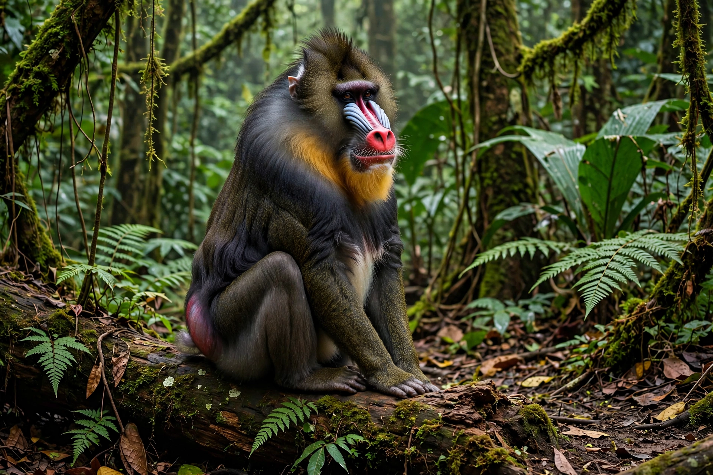

| Mandrill | |
| Scientific name | Mandrillus sphinx |
|---|---|
| Family | Cercopithecidae (Old World monkeys) |
| Range | Rainforests of Cameroon, Gabon, Equatorial Guinea and Congo |
| Conservation status | Vulnerable (IUCN) |
The mandrill (Mandrillus sphinx) is a large Old World monkey native to the rainforests of west-central Africa. It is one of the most colourful mammals in the world: adult males have grooved, bright blue and red facial skin, a yellow beard, and brightly coloured rumps. The mandrill is the largest species of monkey, and together with its close relative the drill it forms the genus Mandrillus, historically grouped with the baboons.

Mandrills are strongly sexually dimorphic. Males weigh on average around 25–32 kg (the largest verified individuals considerably more) and have massive skulls with large canine teeth, a bony paranasal swelling, and brilliant skin colours that intensify with testosterone and social rank: the red of the nose and the blue of the ridged cheeks are structural colours produced by collagen arrays in the skin. Females are about half the males' weight and much duller in colour. Both sexes have an olive-brown coat, a short tail, and a sternal scent gland used in marking.
Mandrills live on and near the forest floor in southern Cameroon, Gabon, Equatorial Guinea and the Republic of the Congo. They form some of the largest social aggregations of any primate: troops or "hordes" of several hundred animals — groups of 600–800 have been recorded — which move through the forest foraging for fruit, seeds, leaves, fungi, invertebrates and small vertebrates. A horde contains many one-male units with females and young; dominant males are the most brightly coloured. Mandrills communicate with a repertoire of calls, facial expressions and scent marking, and sleep in trees at night, choosing new sites each evening.
The IUCN lists the mandrill as Vulnerable. It is threatened by habitat loss and by hunting for bushmeat, for which it is a favoured target. It is protected in national parks such as Lopé National Park in Gabon, a key study site, but enforcement outside reserves is limited.